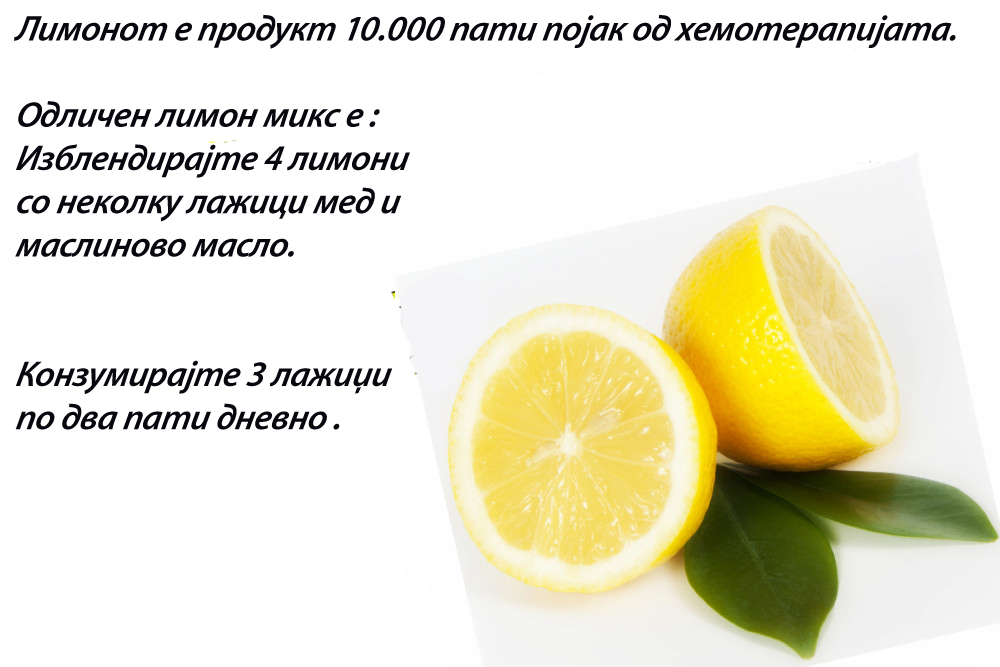
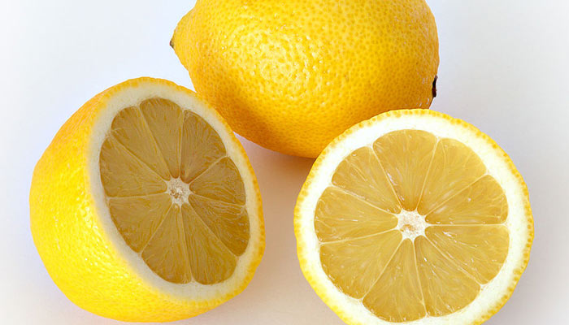

Според последните истражувања се верува дека лимонот е 10.000 пати појак од хемотерапијата. Но, зошто никогаш не сме слушнале за тоа? Затоа што големите лаборатории прават синтетичка верзија која ќе им донесе голем профит. Сега може да користите лимон во борба против канцерот или да предложите на некој близок или пријател. Лимонот не предизвикува ефект како што предизвикува хемотерапијата. Според американските истражувачи лимонот ги уништува малигните клетки на 12 видови на рак, како што е рак на дојка, дебело црево, панкреас....Докажано е дека соединенијата во дрвото од лимонот се 10.000 пати појаки од Адриамицинот кој се користи во хемотерапијата. Лимонот го забавува растот на клетките на ракот и уште позачудувачки е што екстрактот од лимонот не ги уништува здравите клетки туку само малигните.
Доколку сакате да го замрзнете лимонот тогаш тоа направете го така што ќе го измиете со јаболков оцет заради дезинфекција, а потоа ќе го замрзнете. Потрудете се да го користите лимонот што е можно повеќе во исхраната. На пример да го пиете како сок, кората од лимон да ја користите како додаток во салата, супа итн.
